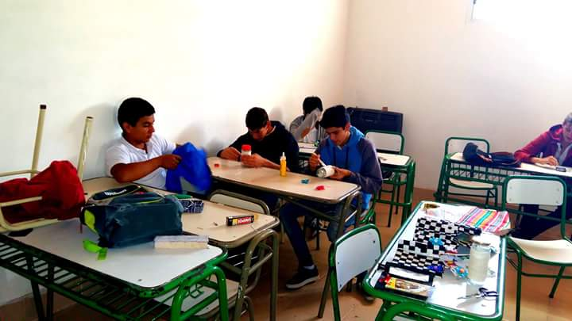
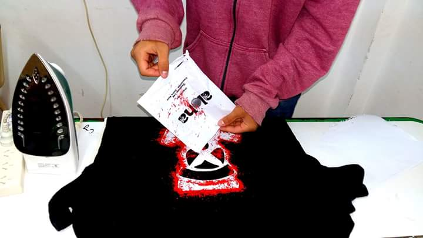

- 
- 

Técnicos en Computación
De acuerdo con la resoloción 15/07 del Consejo Federal de Educación el Técnico en Computación estará capacitado para asistir al usuario de productos y servicios informáticos brindándole servicios de instalación, capacitación, sistematización, mantenimiento primario, resolución de problemas derivados de la operatoria, y apoyo a la contratación de productos o servicios informáticos, desarrollando las actividades descriptas en su perfil profesional y pudiendo actuar de nexo entre el especialista o experto en el tema, producto o servicio y el usuario final
Sus actividades profesionales cubren las siguientes áreas
- Facilitar la operatoria del usuario
- Mantener la integridad de los datos locales del usuario
- Instalar y poner en marcha componentes o sistemas, equipos y redes
- Optimizar el ambiente informático de trabajo del usuario
- Asesorar y apoyar en la compra y venta de productos o servicios informáticos
- Autogestionar sus actividades
Desarrollo institucional de los espacios de Prácticas Profesionales
El 4to año de la especialidad será capaz de
- Diagnosticar y reparar sistemas operativos
- Diagnosticar y reparar redes domésticas cableadas
El 5to año de la especialidad será capaz de
- Programar en C/C++
- Creación de páginas web
- Diagnosticar y reparar redes wi-fi
El 6to año de la especialidad será capaz de
- Programar en Visual C
- Diagnosticar y reparar computadoras
el 7mo año de la especialidad será capaz de
- Instalar redes
- Proporcionar servicio técnico